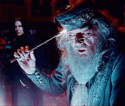

Kad bi bar postojao način da možeš nekako izbaciti misli van i zatim ih pogledati. Dumbledore to čini na Harry Potteru, no što kada bi ti rekao da je to moguće i u stvarnom životu? Čarolija ne postoji kažeš?
Ali što ako postoji? Možda ne na takav način na koji je prikazano na filmu, ali postoji nešto isto tako učinkovito. Ta magija se zove pisanje.
Kad mi je glava puna svega pokušam staviti misli na papir. Izvučem ih iz glave baš kao naš Dumbledore. I zatim vidim sebe iz treće perspektive i tad mi je lakše donijeti odluke. Vidim objektivnu stranu.
Znaš kada gledaš neki film i ne možeš vjerovati kako su ponekad likovi glupi? Kako može donijeti tako loše odluke?
Svi smo mi u jednom trenutku bili ti likovi, a ovo pisanje mi pomaže da prepoznam kada možda donosim jednu od tih odluka.
Ali kako pisati? Samo piši. Nije važno što, samo piši prvo što ti je na pameti. Ne pišeš sastavak. To neće nitko čitati osim tebe. Možeš pisati i na računalu, gdje god ti je ugodnije. Čim brže pišeš tim bolje. Loviš misli koje su ti trenutno na pameti. Prvih par rečenica će možda biti besmislene, ali u jednom trenutku ćeš uloviti tok misli.
Većina misli koje mislimo svaki dan su iste kao i dan prije. Ja znam da ne želim svaki dan provesti s jedno te istim mislima, jer to znači da ne rastem. To znači da stojim na mjestu. Da stagniram. To ne želim. Želim rasti, razvijati se i biti bolji. Zato je dobra praksa pisati svaki dan. Bar 450 riječi. Toliko da vidiš o čemu razmišljaš.

Možda se iznenadiš. Ja znam da ja jesam.
To je prvi korak. Kada vidiš svoje misli, tada možeš lakše uočiti problem. Mnogo puta sam pisanjem zapravo saznao da me koči samo strah, svi ostali razlozi su samo bili izgovori.
Samo piši.